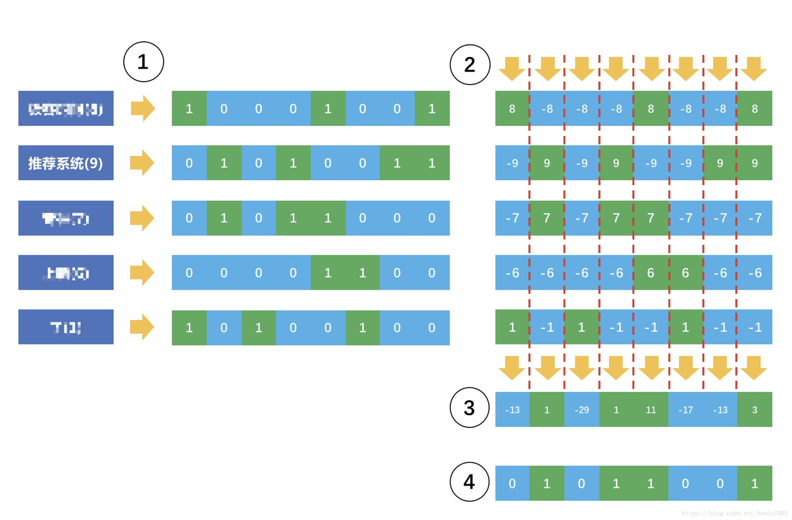
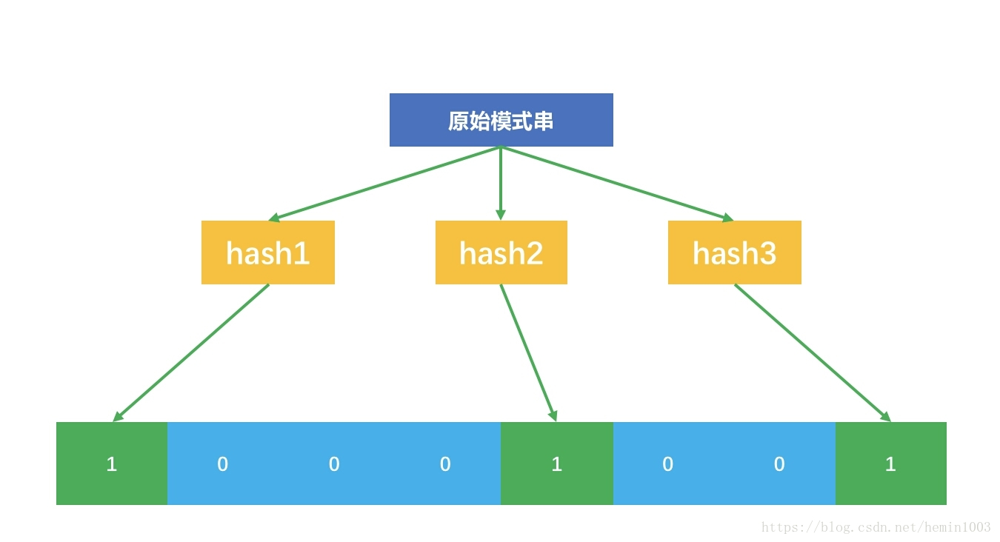
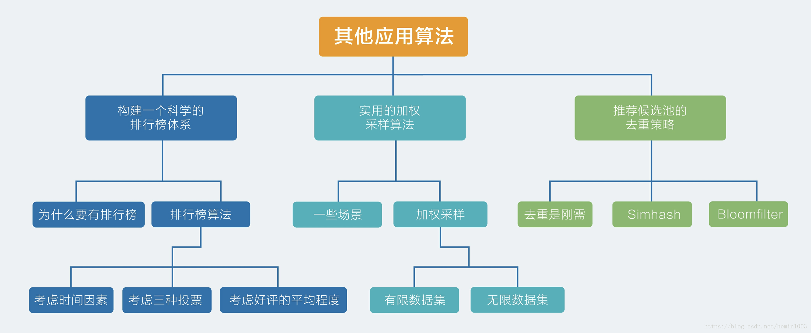

聊两个问题，它们看似和推荐系统没有必然关系，但实际上，在你构建自己的推荐系统的时候，不可避免地会遇到这两个问题。
去重是刚需
在推荐系统中，有一个刚需就是去重，那么说在哪些地方有去重的需求呢？
主要是在两个地方：一个是内容源去重，另一个是不重复给用户推荐。
先说说内容源的去重。
如果一个平台自己不生产内容，只是做内容搬运和聚合分发，那么从大量第三方的内容生产处抓取内容，就难免遇到相似甚至重复的内容。这就需要对内容做一个重复检测了。
对内容做重复检测，直观的思路是分词，然后提取关键词，再两两计算词向量之间的距离，距离小于一定阈值后就判定为重复。然而，这对于海量内容，比如几千万以上的内容来说简直就是灾难。
其实，内容源去重并不是仅在推荐系统中才首次出现，这早在搜索引擎时代就是一个刚需了，搜索引擎把整个互联网的网页都下载到自己的服务器上，这时，重复冗余的内容就需要被检测出来。
另一个需求是在内容阅读类推荐场景下，给用户推荐的内容不要重复，推荐过的内容就不再出现在推荐候选集中。
在你刷一个信息流产品时，不断看到重复的内容，想必不是使用感很好的一件事。因为以抓取作为主要内容来源的信息流产品，不同于社交网站上用户自发产生内容，除非遇到用户恶意发送，否则后者是不容易重复的。
以上两个场景，需要在你打造自己的推荐系统时予以考虑和应对。
今天就介绍两种最常见的去重算法，两者有相通之处也有不同的之处。
1. Simhash
内容重复检测，是搜索引擎公司最先遇到的，所以 Google 在 07 年公开了他们内部的内容重复检测算法，这个算法简单有效，甚至造福了今天的信息流推荐产品。
对于很长的内容，如果只是检测绝对重复，也就是说完全一模一样的那种情况，那么使用 MD5 这样的信息指纹方法非常高效，无需再去分词、提取关键词和计算关键词向量之间的距离。
我们直接将原始的内容映射为一个短字符串，这个短字符串就是原始内容的指纹，虽然不是绝对保证和原始内容一一映射，但是不同内容能得到相同指纹的概率非常小。
只是这种信息指纹的方法有个非常明显的坏处就是，哪怕原始内容改一个字，得到的信息指纹就会截然不同。
这就没法愉快地玩耍了，你一定希望的是只要主要内容不变，就算一些不太重要的词句不同，也仍然可以得到相近甚至相同的指纹。这才能更加灵活地进行内容重复检测。是否有这样的算法？有，就是 Simhash。
Simhash 核心思想也是为每个内容生成一个整数表示的指纹，然后用这个指纹去做重复或者相似的检测。下面这个示意图说明了 Simhash 如何把一个原始内容表示成一个整数指纹。

好，现在详细说明一下这个过程。
-
首先，对原始内容分词，并且计算每个词的权重；
-
对每个词哈希成一个整数，并且把这个整数对应的二进制序列中的 0 变成 -1，1 还是 1，得到一个 1 和 -1 组成的向量；
-
把每个词哈希后的向量乘以词的权重，得到一个新的加权向量；
-
把每个词的加权向量相加，得到一个最终向量，这个向量中每个元素有正有负；
-
把最终这个向量中元素为正的替换成 1，为负的替换成 0，这个向量变成一个二进制位序列，也就是最终变成了一个整数。
最终这个整数就代表了原始的内容。这个 Simhash 奇妙在哪呢？
看这个示意图中，故意加了一个不太重要的词“了”，它的权重是 1，对应的加权向量元素不是 1 就是 -1，在上述的第四步中，如果这个词对应的向量缺少了，其实根本不影响最终得到那个整数，因为它很难改变最终向量元素的正负。这就是为什么那些不太重要的词不影响内容之间的重复检测。
Simhash 为每一个内容生成一个整数指纹，其中的关键是把每个词哈希成一个整数，这一步常常采用 Jenkins 算法。这里简单示意的整数只有 8 个二进制位，实际上可能需要 64 个二进制位的整数，甚至范围更大。
得到每个内容的 Simhash 指纹后，可以两两计算汉明距离，比较二进制位不同个数，其实就是计算两个指纹的异或，异或结果中如果包含 3 个以下的 1，则认为两条内容重复。
为了高效，也可以直接认为指纹相同才重复，视情况而定。
2. Bloomfilter
除了内容重复检测，还有一个需求是防止已经推荐的内容被重复推荐。这个刚需和上述内容重复相比，最大的不同就是过滤对象不同，上述 Simhash 过滤对象是内容本身，而这里则一般是内容的 ID。
内容的 ID 一般是用一个 UUID 表示，是一个不太长的字符串或者整数。
对于这类形如模式串的去重，显然可以用单独专门的数据库来保存，为了高效，甚至可以为它建上索引。
但对于用户量巨大的情况下，这个做法对存储的消耗则不可小看。实际上，解决这类看一个字符串在不在一个集合中的问题，有一个有点老但很好用的做法，就是 Bloomfilter，有时候也被称为布隆过滤器。
布隆过滤器的原理也要用到哈希函数。它包含两部分：一个很长的二进制位向量，和一系列哈希函数。Bloomfilter 是一个很巧妙的设计，它先把原始要查询的集合映射到一个长度为 m 的二进制位向量上去，它映射的方法是：
-
设计 n 个互相独立的哈希函数，准备一个长度为 m 的二进制向量，最开始全是 0；
-
每个哈希函数把集合内的元素映射为一个不超过 m 的正整数 k，m 就是二进制向量的长度；
-
把这个二进制向量中的第 k 个位置设置为 1；也就是一个元素会在二进制向量中对应 n 个位置为 1。
看示意图。

这个示意图中，原始的模式串经过三个互相独立的哈希函数，映射到 8 位二进制向量中的三个位置了。
原始的模式串集合经过这样的处理后，就得到一个很大的二进制向量。在应用阶段时，假如来了一个模式串 s，需要查询是否在这个集合中，也需要经过同样的上述步骤。
每个哈希函数对这个模式串 s 哈希后都得到一个整数，看看这个整数在二进制向量中所指示的位置是不是 1，如果每个哈希函数所指示的位置都是 1，就说明模式串 s 已经在集合中了。
需要说明的是，Bloomfilter 也并不是百分之百保证的，有很小的概率把原本不存在集合中的模式串判断为存在。这样就会造成那些明明还没有推荐给用户的内容 ID 就再也不会推荐给用户了，当然，这个小概率是可以承受的。

总结
介绍了两种去重算法。在推荐系统中，虽然我们十分关心推荐匹配的效果，但是别忘了，对原始内容的挖掘和清洗往往更加重要。这其中就包括对重复内容的检测。
两种去重策略都是牺牲一点误伤的概率换得大幅度的效率提升，具体的做法都是要借助哈希函数。只是哈希函数的结果在两个算法中有不同的处理手段，Simhash 是加权，Bloomfilter 则是用来做寻址。
有一个思考题，请你想一想，如果要从 Bloomfilter 中去掉一个元素，该怎么做？有兴趣，可以一起探讨一下。
共勉，(๑•̀ㅂ•́)و✧加油
Minbo